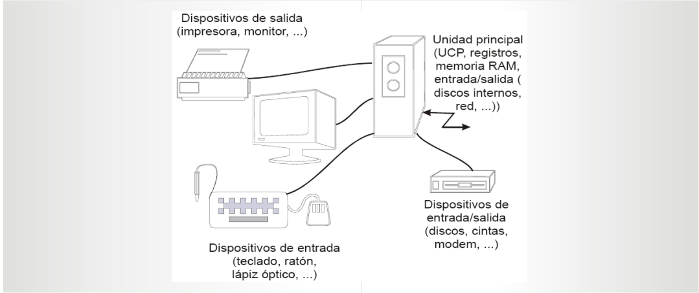
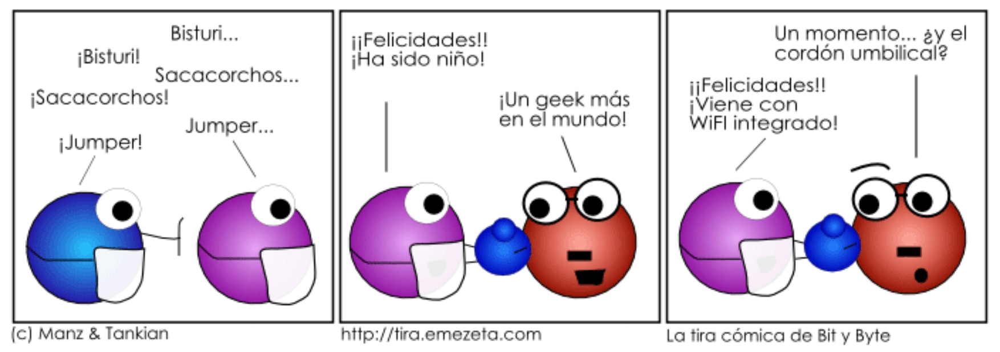
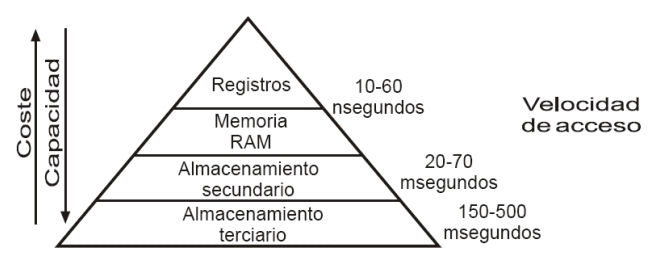

Curso de:
SISTEMAS OPERATIVOS
Unidad II, ENTRADA - SALIDA
Creado por: Oscar Martinez / oscar . martinezcontreras @gmail . com
SISTEMAS OPERATIVOS
ENTRADA - SALIDA
- Introducción -
- Caracterización de los dispositivos de Entrada/Salida -
- Arquitectura del sistema de Entrada/Salida -

Introducción
El corazón de una computadora lo constituye el CPU. Sin embargo, no serviría de nada sin: Dispositivos de almacenamiento secundario (discos) y terciario (cintas, CD, DVD). Dispositivos periféricos que le permiten interactuar con el usuario Generalmente están fuera de la computadora y se conectan a ella mediante cables Son los teclados, ratones, micrófonos, cámaras y cualquier otro dispositivo de E/S que se nos ocurra conectar a la computadora.
Introducción
Clasificación de los dispositivos de E/S
Periféricos Legibles para el usuario Permiten la comunicación entre el usuario y la computadora, ya sea de entrada (ratón, teclado, etc.) o salida (pantalla, impresora, etc.). Dispositivos de almacenamiento Legibles para la máquina Proporcionan almacenamiento no volátil de datos para abastecer a los programas que ejecuta el CPU. Dispositivos de comunicaciones Permiten conectar a la computadora con otras computadoras a través de una red. Los dos dispositivos más importantes son los módem y las tarjetas de interfaz de red.
Introducción
Velocidad de los dispositivos
El gran problema de todos los dispositivos de E/S es que son muy lentos El CPU procesa instrucciones a mas de 1 GHz y la memoria RAM tiene un tiempo de acceso de nanosegundos. Los dispositivos de E/S más rápidos tienen una velocidad del orden de los milisegundos. Esta diferencia en la velocidad de acceso, y el hecho de que las aplicaciones son cada vez más interactivas y necesitan más E/S, hace que los sistemas de E/S sean el cuello de botella más importante de los sistemas. Por ello los SO dedican un gran esfuerzo en desarrollar y optimizar los mecanismos de E/S. 
Introducción
El SO debe controlar el funcionamiento de todos los dispositivos de E/S para alcanzar los siguientes objetivos:
Facilitar el manejo de los dispositivos periféricos. Para ello debe ofrecer una interfaz entre los dispositivos y el resto del sistema que sea sencilla y fácil de utilizar. Optimizar la E/S del sistema, proporcionando mecanismos de incremento de prestaciones donde sea necesario. Proporcionar dispositivos virtuales que permitan conectar cualquier tipo de dispositivo físico sin que sea necesario remodelar el sistema de E/S del SO. Permitir la conexión de dispositivos nuevos de E/S, solventando de forma automática su instalación usando mecanismos del tipo plug&play.
Caracterización de los dispositivos de E/S
La visión del sistema de E/S puede ser muy distinta dependiendo del nivel de detalle necesario en su estudio.
Para los programadores, el sistema de E/S es una caja negra que lee y escribe datos en dispositivos externos a través de una funcionalidad bien definida. Para los fabricantes de dispositivos, un dispositivo es un instrumento muy complejo que incluye cientos de miles de componentes electrónicos o electro-mecánicos. Los diseñadores de SO se encuentran en un lugar intermedio entre los dos anteriores Les interesa la funcionalidad del dispositivo, aunque a un nivel de detalle mucho más grande que la funcionalidad que espera el programador de aplicaciones. También les interesa conocer la interfaz física de los dispositivos y su comportamiento interno para poder optimizar los métodos de acceso a los mismos.
Caracterización de los dispositivos de E/S
Conexión de dispositivos del sistema de E/S
En el modelo de un periférico se distinguen dos elementos:
Periféricos o dispositivos de E/S Elementos que se conectan al CPU a través de la unidades de E/S. Son el componente mecánico que se “conecta” a la computadora. Controladores de dispositivos o unidades de E/S Se encargan de hacer la transferencia de información entre la memoria principal y los periféricos. Son el componente electrónico a través del cual se conecta el dispositivo de E/S.
Tienen una conexión al bus de la computadora y otra para el dispositivo (generalmente mediante cables internos o externos).
Caracterización de los dispositivos de E/S
Controladores
Son muy variados, casi tanto como los dispositivos de E/S Muchos de ellos pueden controlar múltiples dispositivos (los de disco). Otros, como los canales de E/S, incluyen su propia CPU y bus para controlar la E/S por programa y evitar interrupciones en el CPU de la computadora. En los últimos años ha existido un esfuerzo importante de estandarización de los dispositivos, lo que permite usar un mismo controlador para dispositivos de distintos fabricantes. El controlador es el componente más importante desde el punto de vista del SO, ya que constituye la interfaz del dispositivo con el bus de la computadora y es el componente que se ve desde el CPU. Su programación se lleva a cabo mediante una interfaz a muy bajo nivel que proporciona acceso a una serie de registros del controlador. Las características del controlador son muy importantes, ya que definen el aspecto del periférico para el SO. Fundamental: Dirección de E/S, Unidad de transferencia e interacción computadora-controlador.
HASTA AQUI LLEGA...pendientes subir mas información
- 1.-
- 2.-
- 3.-
- 4.-
Fantastic Ordered List
- One is smaller than...
- Two is smaller than...
- Three!
Transition Styles
You can select from different transitions, like:
Cube -
Page -
Concave -
Zoom -
Linear -
Fade -
None -
Default
Themes
Reveal.js comes with a few themes built in:
Default -
Sky -
Beige -
Simple -
Serif -
Night
Moon -
Solarized
* Theme demos are loaded after the presentation which leads to flicker. In production you should load your theme in the <head> using a <link>.
Global State
Set data-state="something" on a slide and "something"
will be added as a class to the document element when the slide is open. This lets you
apply broader style changes, like switching the background.
Custom Events
Additionally custom events can be triggered on a per slide basis by binding to the data-state name.
Reveal.addEventListener( 'customevent', function() {
console.log( '"customevent" has fired' );
} );
Slide Backgrounds
Set data-background="#007777" on a slide to change the full page background to the given color. All CSS color formats are supported.
Image Backgrounds
<section data-background="image.png">Repeated Image Backgrounds
<section data-background="image.png" data-background-repeat="repeat" data-background-size="100px">Background Transitions
Pass reveal.js the backgroundTransition: 'slide' config argument to make backgrounds slide rather than fade.
Background Transition Override
You can override background transitions per slide by using data-background-transition="slide".
Clever Quotes
These guys come in two forms, inline:
“The nice thing about standards is that there are so many to choose from”
and block:
“For years there has been a theory that millions of monkeys typing at random on millions of typewriters would reproduce the entire works of Shakespeare. The Internet has proven this theory to be untrue.”
Pretty Code
function linkify( selector ) {
if( supports3DTransforms ) {
var nodes = document.querySelectorAll( selector );
for( var i = 0, len = nodes.length; i < len; i++ ) {
var node = nodes[i];
if( !node.className ) {
node.className += ' roll';
}
}
}
}
Courtesy of highlight.js.
Intergalactic Interconnections
You can link between slides internally, like this.
Fragmented Views
Hit the next arrow...
... to step through ...
any type- of view
- fragments
Fragment Styles
There's a few styles of fragments, like:
grow
shrink
roll-in
fade-out
highlight-red
highlight-green
highlight-blue
current-visible
highlight-current-blue
Spectacular image!

Export to PDF
Presentations can be exported to PDF, below is an example that's been uploaded to SlideShare.
Take a Moment
Press b or period on your keyboard to enter the 'paused' mode. This mode is helpful when you want to take distracting slides off the screen during a presentation.